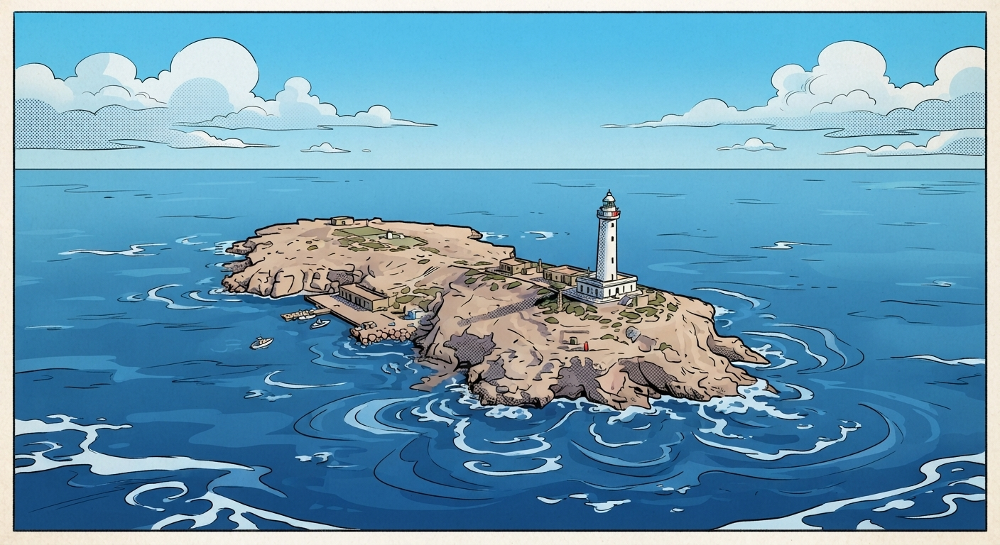
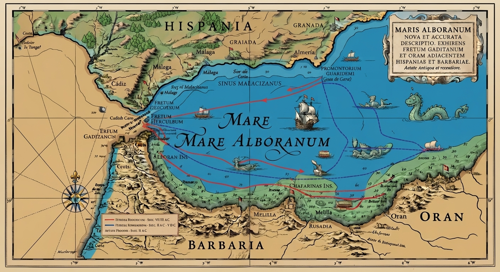

1: Historia, Geología y Geopolítica del Mar

Se extiende a lo largo de unos 350 kilómetros de oeste a este y 180 de norte a sur, delimitado por las costas de Andalucía (España), el norte de África (Marruecos) y las ciudades autónomas de Ceuta y Melilla.
Geológicamente enmarcado en el Arco de Gibraltar, este mar cuenta con una profundidad media de 1.000 metros (con picos que superan los 2.200 metros) y está surcado por una cordillera submarina central de la que emerge la emblemática e insular Isla de Alborán.
Históricamente ha sido una ruta de navegación esencial desde la antigüedad (fenicios, romanos y púnicos) y un escenario estratégico de control comercial y militar debido a su cercanía al Estrecho de Gibraltar.
